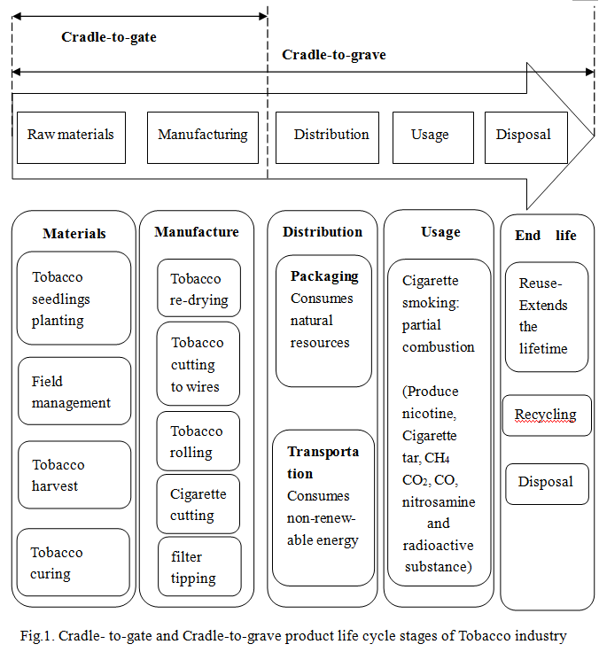
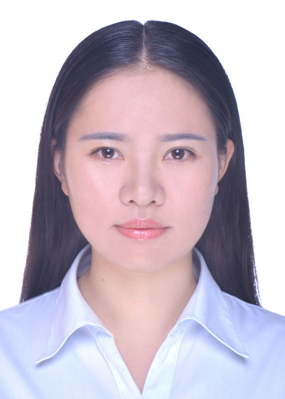

I am a postgraduate student majoring in Industrial Engineering, in Department of Mechanical Engineering & Automation, Zhejiang Science and Technology University. My current research is focused on developing models of calculating gas emission and simulating the emission for real-world factories.I am interested in system modeling and simulation of real situation which can simulate some specific factors, such as time, uncertainty, emergency and risk, etc. The simulation results are analyzed so that various techniques can be performed to predict the evolution of the system. Better scheme of the system can then be pre-determined, which enables us to optimize the existing system or design a new one.
I graduated in July 2009 with a degree in Industrial Engineering, in Zhejiang University of Technology, Zhijiang College. Many of my courses and research activities in the final year were in the field of Industrial Engineering and Operations Research and closely related to the Production Logistics. I also have motivation in System Decision-Making Analysis and Game theory. I was introduced to a system decision-making analysis team in which the desire to study the risk decision-making analysis prompted me to be interested in this field.
My CV can be viewed here..


Name:QIAN Xiaoyan (钱小燕)
Nationality:Chinese
Occupation:Graduate Student
Present Address:No.5, Second Avenue, Jianggan District, Hangzhou, Zhejiang
Contacts:（86）15068734114
E-MAIL: fanwoshu@163.com